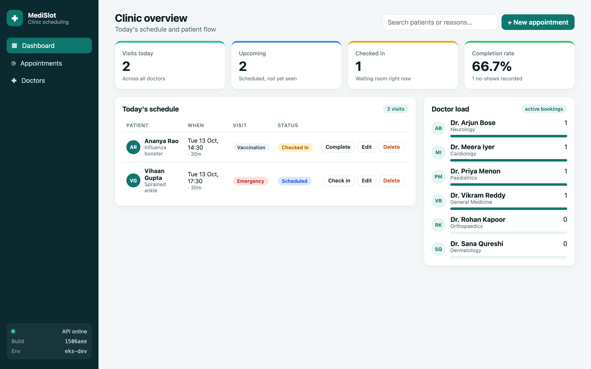
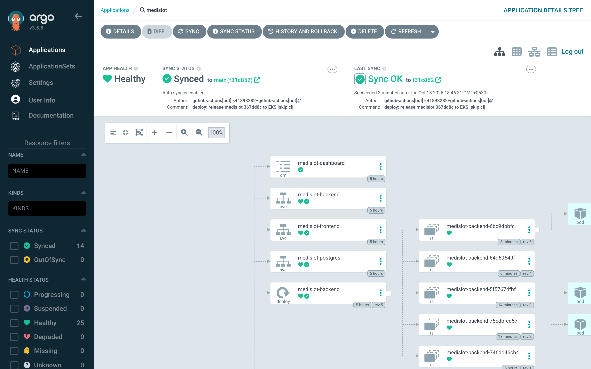
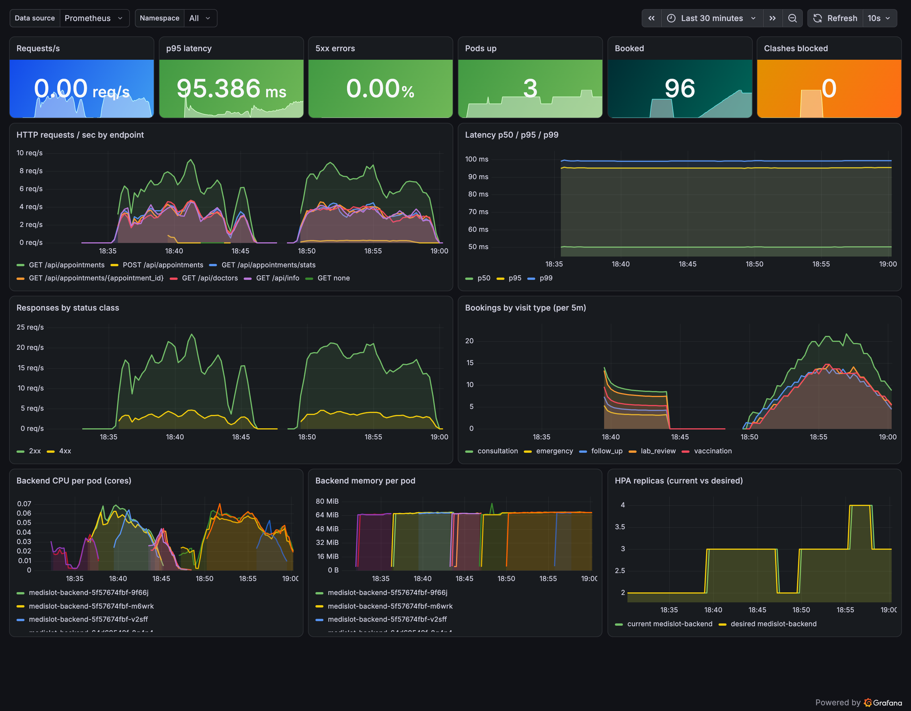

React · FastAPI · PostgreSQL · Docker · GitHub Actions · Trivy · Terraform · EKS · Helm · Argo CD · Prometheus · Grafana
Ayush Singh · github.com/ayushsingh199/DevOps_Capstone_Project
Patient, doctor, slot, visit type and reason, validated by Pydantic
One click per status change; cancel and no-show are tracked
An overlapping slot for the same doctor returns 409 Conflict
Visits today, upcoming, waiting room, completion rate, doctor load

:git-sha to GHCRvalues-eks.yaml/ → frontend /api → backend/metrics| Layer | Technology | Why |
|---|---|---|
| Application | React 19 + Vite · FastAPI · SQLAlchemy 2 · Alembic · PostgreSQL 16 | Typed API, versioned schema |
| Quality | pytest (23 tests, 97% coverage) · ruff · ESLint · Prettier | First gate in the pipeline |
| Containers | Multi-stage Dockerfiles · non-root · Docker Compose | Small, reproducible images |
| CI/CD | GitHub Actions · GHCR · SHA-pinned actions | Every image traceable to a commit |
| Security | Trivy gate + SARIF · Pod Security "restricted" · NetworkPolicy | Defence in depth |
| Infrastructure | Terraform · AWS VPC · EKS · EBS CSI (Pod Identity) | Reviewable, repeatable infra |
| Delivery | Helm chart · Traefik Ingress · HPA · Argo CD | Pull-based GitOps |
| Observability | kube-prometheus-stack · ServiceMonitor · PrometheusRule · Grafana | See traffic, latency, errors |
GET / POST | /api/appointments |
GET / PUT / DELETE | /api/appointments/{id} |
GET | /api/appointments/stats |
GET / POST / DELETE | /api/doctors[/{id}] |
GET | /health · /ready · /metrics · /api/info |
routers/ → HTTP · services/ → rules · models.py → tables · schemas.py → contract
0001 creates doctors + appointments with check constraints and indexes; 0002 seeds the doctor roster. Runs in an initContainer under pg_advisory_lock.
/health = process alive (liveness) · /ready = database reachable (readiness, 503 otherwise)
conftest.py overrides get_db with a fresh in-memory SQLite per test. In CI, migrations also run against a real PostgreSQL 16 service container.
ruff (lint + format) · ESLint · Prettier. Any failure stops the pipeline.
python:3.12-slim builds wheels → slim runtime with OS packages upgraded and pip removed → runs as UID 10001 with a HEALTHCHECK on /health
node:22-alpine runs npm ci && vite build → nginx-unprivileged serves dist/ as UID 101 on port 8080. No Node in the final image.
postgres (healthy) → backend (migrate + seed, healthy) → frontend on localhost:3000
ghcr.io/…/medislot-*:<git-sha>values-eks.yaml → Argo CDTags are the full commit SHA, never latest. The running SHA is shown in the app's sidebar.
Pull requests build and scan but never publish. Only scanned images reach GHCR.
All third-party actions are pinned to commit SHAs; a tag can be re-pointed, a SHA can't.
OS packages (Debian 13 backend, Alpine 3.23 frontend) and language dependencies (Python wheels) inside both images, against public vulnerability databases.
0 fixable HIGH/CRITICAL in both images, so the gate passes and the images are pushed.
HIGH, in Debian's util-linux (bsdutils, libblkid1), status affected, no fix. It's tolerated via ignore-unfixed: the API never runs these tools, and runs non-root, read-only, with no Linux capabilities. It's tracked in the Security tab and picked up by apt-get upgrade once Debian ships a fix.
readOnlyRootFilesystem, drop: [ALL], seccompterraform planterraform-aws-modules/vpc: 10.20.0.0/16, 2 AZs, single NAT gateway, subnet tags for internet-facing and internal load balancers
terraform-aws-modules/eks v21: public + private endpoint, creator admin via access entry; add-ons vpc-cni, coredns, kube-proxy, pod-identity, EBS CSI (Pod Identity role), metrics-server
Only terraform.tfvars.example is committed; state and tfvars are git-ignored. scripts/teardown.sh removes the NLB and EBS volumes first, then runs terraform destroy.
| Resource | Detail |
|---|---|
| Deployment backend | 2–6 replicas · initContainers wait-for-db + migrate |
| Deployment frontend | 2 replicas · read-only Nginx |
| StatefulSet postgres | 2 Gi encrypted gp3 volume |
| Service ×3 | ClusterIP: backend :8000, frontend :80, postgres :5432 |
| Ingress | /api → backend · / → frontend |
| HPA · PDB · NetworkPolicy | CPU 60% · minAvailable 1 · DB isolation |
| ServiceMonitor · PrometheusRule | scrape config + 3 alerts |
values.yaml defaults · values-dev.yaml local k3s · values-eks.yaml GHCR images, tags owned by CI
An Ingress is only configuration. Traefik implements it (ingress-nginx was retired in March 2026); on EKS it sits behind an AWS NLB.
maxUnavailable: 0 + readiness on /ready
"deploy: release medislot <sha>" in values-eks.yaml
polls main every 60 s, renders the Helm chart
automated sync with prune and self-heal
manual kubectl edit drift is reverted automatically

http_requests_total, http_request_duration_seconds plus domain counters medislot_appointments_booked_total, medislot_booking_conflicts_total
ServiceMonitor → every backend pod's /metrics every 15 s, all targets UP
BackendDown · HighErrorRate > 5% · p95 > 500 ms

The first AWS account sat in an Organization whose service control policy denied EC2 and EKS. No IAM change can override that, so I moved to a standalone account.
5 vCPUs On-Demand, so 3 × t3.medium (6 vCPU) wouldn't launch. Resized to 2 × t3.large: 4 vCPU and more pods per node.
The community controller was retired in March 2026, so I chose Traefik while keeping a standard networking.k8s.io/v1 Ingress.
The new "watcher" wait hung on a CRD-heavy chart; the bootstrap script now picks the right wait strategy for Helm 3 or 4.
Back-to-back pushes made two deploy jobs rebase the same lines and conflict. Releases are now serialized, superseded commits are skipped, and retries re-apply instead of rebasing.
Under use, Grafana with ~25 bundled dashboards exceeded its 384 Mi limit (exit 137). Found it via lastState.terminated and raised the limit to 768 Mi.
git push → tests → Trivy → GHCR → Argo CD → EKS → Grafana
Edit the dashboard subtitle, commit, push
Pipeline goes green; Argo CD syncs the new SHA
New build SHA in the app, targets UP, live Grafana panels
Thank you · github.com/ayushsingh199/DevOps_Capstone_Project